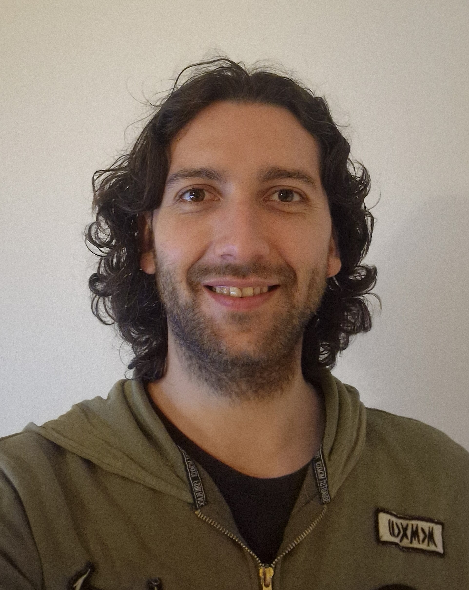

Englisch Deutsch
Patrick Posch

Zsuammenfassung
Ich bin ein Computer Nerd aus Österreich. In meiner Freizeit beschäftige ich mich
hauptsächlich mit der Entwicklung von Spielen, Webseiten usw...
Ausbildung
- Prozesstechniker LBS Knittelfeld
Erfahrung in der Berufswelt
- Weitzer Parkett GmbH (2006 - 2016)
- Magna International (2016 - jetzt)
Skills
- Englisch und Deutsch
- Spieleentwicklung (Programmierung und Gamedesign - Unity)
- Gute Computerkenntnisse
- Ziehharmonika spielen
Zertifizierungen
- Game Programmer certification - Jason Weimann
- C# Masterclass - Janek Pruin
- Prozesstechniker LAP
Anderes